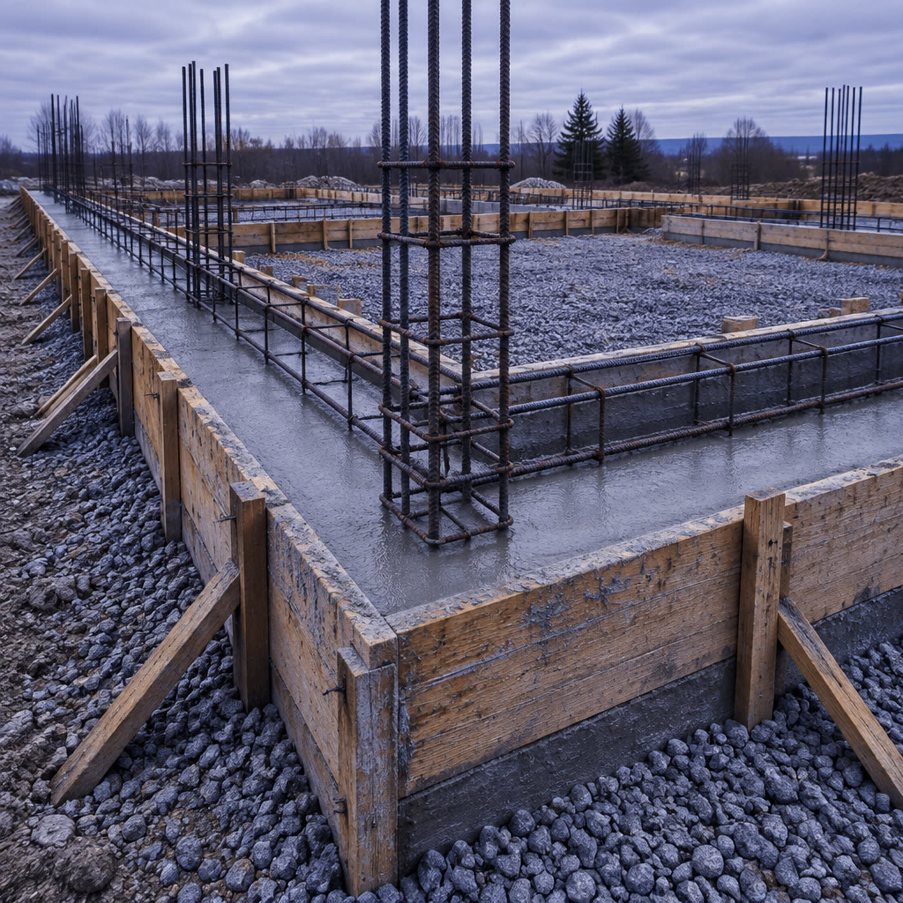

Фундамент, который
не поведёт весной
Монолитные фундаменты, колонны, лестницы, подпорные стены и заборы. Бетонные работы любой сложности, своя опалубка: не зависим от аренды щитов и не платим за простой. Считаем заглубление под грунт и промерзание, а не «как у соседа».
Что льём
Работаем и с частными домами, и с подрядчиками: одна бригада закрывает весь бетонный цикл, поэтому не нужно искать разных людей на фундамент, лестницу и забор.
Монолитные фундаменты
Ленточные, плитные и свайно-ростверковые. Разметка, земляные работы, подушка, армирование, заливка, распалубка.
под ключКолонны
Монолитные колонны для террас, навесов, пристроек и промышленных каркасов. Армокаркас вязаный, опалубка щитовая.
монолитЛестницы
Монолитные марши и поворотные лестницы по вашему проекту: от геометрии ступеней до заливки в одну смену.
по проектуПодпорные стены
Для участков с уклоном: расчёт толщины, дренаж, деформационные швы. Держит грунт, а не только красиво выглядит.
с дренажомЗаборы и ограждения
Бетонные ленточные основания, столбы, цоколи под металл и кирпич. Ровная линия по горизонту на сложном рельефе.
основаниеБетонные работы любой сложности
Отмостки, площадки, полы по грунту, крыльцо, приямки: тот же подход и та же опалубка, что и на больших объёмах.
по задачеГлубина, от которой зависит дом
Подвиньте глубину заложения: увидите, где проходит промерзание для Гродно и что будет, если фундамент окажется выше. Красная линия — та самая граница.
Пять этапов, каждый под контроль
Бетон не прощает спешки: пропущенная подушка или щель в опалубке видны не сразу, а через сезон. Поэтому этапы не смешиваем.
Разметка
Выносим оси, проверяем диагонали, сверяем с проектом и уровнем участка.
Земляные работы
Копаем на расчётную глубину, выбираем слабый грунт, ставим геотекстиль.
Подушка
Песок и щебень слоями с проливкой и трамбовкой: под подошвой не должно быть пустот.
Армирование и опалубка
Вяжем каркас с защитным слоем, выставляем свои щиты, стягиваем и расклиниваем.
Заливка
Бетон слоями с вибрированием, уход за бетоном, распалубка после набора прочности.
Своя опалубка = без простоя
Когда щиты арендуют, график зависит от чужой брони: привезли не те размеры, забрали раньше срока, посчитали простой. У нас опалубка своя и едет на объект вместе с бригадой, поэтому этапы не растягиваются.
Стоимость аренды не зашита в смету отдельной строкой.
Комплект приезжает с бригадой, работа начинается в назначенный день.
Подбираем размеры под колонны, лестницы и сложные углы, а не подгоняем проект под чужой комплект.
Земля, армирование, опалубка и заливка в одних руках: спорить о браке не с кем.

Спрашивают до заказа
Если вашего вопроса нет, наберите номер: скажем по телефону, без выезда и обязательств.
Сколько стоит фундамент?
Цена зависит от типа, размеров, грунта и глубины: одна и та же лента на песке и на насыпном грунте требует разной подготовки. Поэтому стоимость называем после осмотра участка и фиксируем в договоре до начала работ.
Работаете по чужому проекту?
Да. Можем залить по проекту конструктора, а если проекта нет, предложим тип фундамента под ваш дом, грунт и уклон, и посчитаем материалы.
Когда нельзя заливать?
В сильный мороз без противоморозных добавок и прогрева, а также под дождём без укрытия. Переносим на ближайшее окно по погоде, а не льём «как получится».
Сколько стоит ждать распалубку?
Опалубку снимают после набора прочности: срок зависит от типа конструкции, температуры и состава бетона. Точный срок говорим при заливке, чтобы вы планировали следующие этапы.
Делаете только фундамент или весь бетон?
И то, и другое: фундаменты, колонны, лестницы, подпорные стены, заборы, отмостки и полы по грунту. Одна бригада на весь бетонный цикл.
Далеко от Гродно выезжаете?
Работаем в Гродно и по области: скажите адрес участка при звонке, скажем, выезжаем ли и в какие сроки.